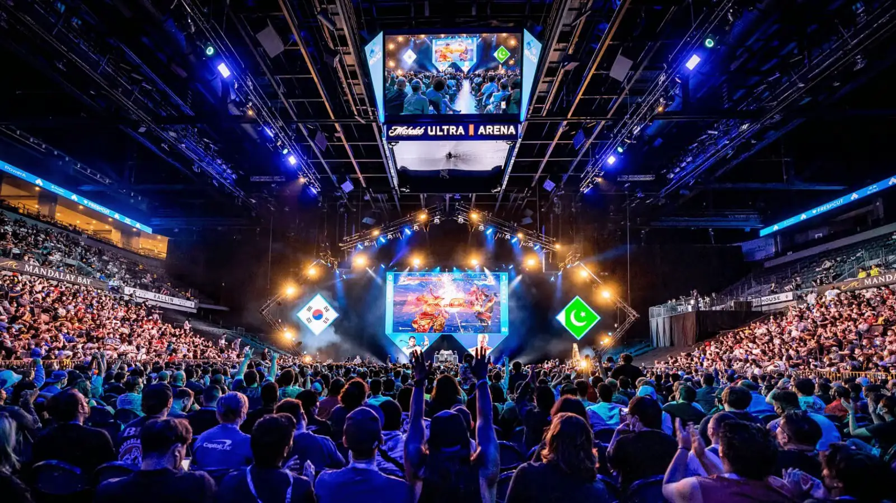
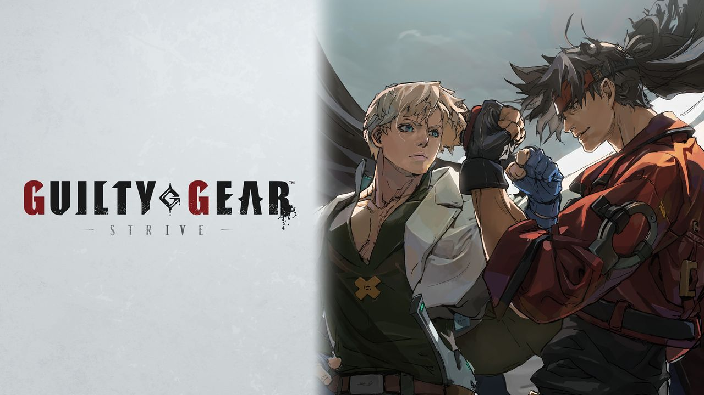

Mes Loisirs
Les jeux de rythme
Quand j'ai du temps de libre, mon loisir principal c'est de jouer aux jeux de rythme. C'est la catégorie de jeux vidéos que je préfère le plus. Plus jeune j'ai commencé avec Patapon sur PSP puis plus tard j'ai découvert osu! sur PC vers 2018. Aujourd'hui après avoir pas mal passé de temps sur ce jeu, j'ai décidé de me reconvertir aux jeux de rythme arcade. C'est une catégorie de jeux qui reste assez niche en France même si de plus en plus de personnes mettent la main dessus.
Laissez moi vous présenter mes préférées:
Taiko No Tatsujin
Taiko No Tatsujin (太鼓の達人, ou Maitre Du Taiko en Français) est mon jeu de rythme Arcade préféré! Comme vous pouvez le voir le jeu se joue avec deux baguettes ce qui est assez atypique, le but ici est bien évidemment de taper les notes en rythme, mais la difficulté est de taper les bonnes notes. Comme vous le voyez il y a deux couleurs de notes à l'écran, les rouges (appelés "Don") se font en tapant au milieu du tambour représentant un son grave de la musique. Et les bleues (appelés "Ka") se font en tapant l'extrémité du tambour représentant un son aigu de la musique.
beatmaniaIIDX
Beatmania IIDX (ビートマニア ツーディーエックス, Bītomania Tsūdiekkusu?) ou l'abréviation IIDX (prononcé 2DX) est une série de jeux de rythme sur bornes d'arcade, créée et maintenue par BEMANI, une division de Konami. La première version d'arcade est sortie le 26 février 1999 et la plus récente le 18 octobre 2023. La série compte à ce jour 31 opus sortis en version arcade, 14 adaptations sur console de salon et 1 adaptation sur PC. Cette fois ci les notes défilent de haut en bas, et le joueur dispose de 7 boutons pour les 7 colonnes ou les notes peuvent arriver en jeu. Si vous avez l'oeil vous avez sûrement dû remarquer ce gros disque à gauche des 7 touches que notre joueur DJ SILON peut faire tourner, c'est bel et bien une colonne aussi. On parle donc de 7 colonnes + 1.
Enfin, la particularité de ce jeu est que les notes sont KeySound c'est à dire que chaque note correspond à un mini fichier audio de la musique. Si le joueur arrête de toucher les notes, plus de musique pour nous..
Les jeux de combat
Quand les jeux de rythme me fatiguent, je passe sur ma deuxième catégorie de jeux préférées: les jeux de combat. Ce genre est un genre de jeu que je trouve excellent de part sa technique comme sa communauté. Ce genre de jeu se joue en 1 contre 1, et la progression du niveau qu'un joueur peut atteindre est tout autant impressionnant que dans les jeux de rythme.
C'est pour cela qu'aujourd'hui se tiennent différents tournoi internationaux prestigieux, réunissant des joueurs du monde entier à un même endroit comme l'EVO
Guilty Gear -Strive-
Guilty Gear Strive (ギルティギア ストライヴ, Giruti Gia Sutoraivu?) est un jeu vidéo de combat développé et édité par Arc System Works. Il s'agit du septième volet principal de la série Guilty Gear et du 24e au total. Le jeu est sorti mondialement le 11 juin 2021.
Et il reste le jeu de combat sur lequel j'ai passé le plus de temps, par sa DA que j'aime toujours autant et ses combats funs pour jouer contre des amis
